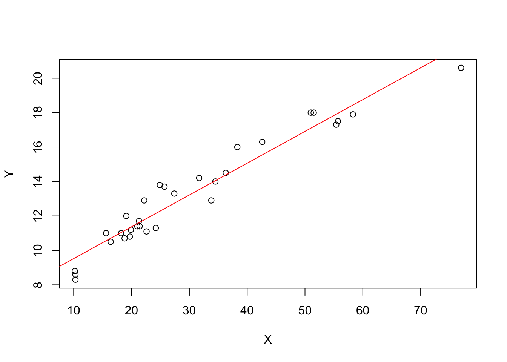

3 Inferences in Regeression and Correlation Analysis
3.1 Inferences Concerning \(\beta_{1}\)
- Sampling Distribution of b1
The sampling distribution of b1 refers to the different values of b1 that would be obtained with repeated sampling when the levels of the predictor variable X are held constant from sample to sample.
For normal error regression model, the sample distributon of b1 is normal, with mean and variance:
\[E(b_1) = \beta_{1}\]
\[\sigma^{2}(b_1) = \frac{\sigma^{2}}{\sum(X_{i} - \bar{X})^{2}}\]
- Proof
b1 as linear combination of the Yi
\[b1 = \sum k_{i}Y_{i}\text{ where }k_{i} = \frac{X_{i} - \bar{X}}{\sum(X_{i} - \bar{X})^{2}}\] - Nomaily
The \(Y_{i}\) are independently, normally distributed, so b1 are normally distributed.
- Mean
\[E(b_{1}) = E(\sum k_{i}Y_{i}) = \sum k_{i}E(Y_{i}) = \sum k_{i}(\beta_{0} + \beta_{1}X_{i}) = \beta_{1}\]
hint:
\[\sum k_{i} = 0\]
\[\sum k_{i}X_{i} = 1\]
- Variance
\[\sigma^{2}(b_{1}) = \sigma^{2}(\sum k_{i}Y_{i}) = \sum k_{i}^{2}\sigma^{2}(Y_{i}) = \sum k_{i}^{2}\sigma^{2} = \sigma^{2}\frac{1}{\sum (X_{i} - \bar{X})^{2}}\]
- Estimated Variance
Replace the paramter \(\sigma^{2}\) with MSE:
\[s^{2}(b_{1}) = \frac{MSE}{\sum(X_{i} - \bar{X})^{2}}\]
- Sampling Distribution of \((b_{1} - \beta_{1})/s(b_{1})\)
\[(b_{1} - \beta_{1})/\sigma(b_{1}) \sim N(0,1)\]
\[(b_{1} - \beta_{1})/s(b_{1}) \sim t(n-2)\]
When a statistic is standardized but the denominator is an estimated standard deviation rather than the true standard deviation, it is called a studentized statistic.
- Comment
\[SSE/\sigma^{2} \sim \chi^{2}(n - 2)\]
\[(b_{1} - \beta_{1})/s(b_{1}) \sim \frac{z}{\sqrt{\frac{\chi^2(n-2)}{n-2}}} = t(n-2)\]
- Confidence Interval for \(\beta_{1}\)
\[b_{1} \pm t(1-\alpha/2; n-2)s(b_{1})\text{ where }\alpha\text{ is significance level}\]
- Tests concerning \(\beta_{1}\)
Since \((b_{1} - \beta_{1})/s(b_{1})\) is ditributed as t with n - 2degrees of freedom, tests concerning \(\beta_{1}\) can be set up in ordinary fashion using the t distribution.
3.2 Inferences Concerning \(\beta_{0}\)
The sampling distribution of \(\beta_{0}\) is normal, with mean and variance:
\[E(b_{0}) = \beta_{0}\]
\[\sigma^{2}(b_{0}) = \sigma^{2}[\frac{1}{n} + \frac{\bar{X}^{2}}{\sum (X_{i} - \bar{X})^{2}}]\]
\[s^{2}(b_{0}) = MSE[\frac{1}{n} + \frac{\bar{X}^{2}}{\sum (X_{i} - \bar{X})^{2}}]\]
\[\frac{b_{0} - \beta_{0}}{s(b_{0})} \sim t(n-2)\]
3.3 Some Considerations on Making Inferences Concerning \(\beta_{0}\) and \(\beta_{1}\)
- Effects of Departures from Normality
- Interpretation of Confidence Coefficient and Risks of Errors
- Spacing of the X levels
- Power of Tests
The power of this test is the probability that the decision rule will lead to conclusion \(H_{a}\) when \(H_{a}\) in fact holds. Specifically, the power is given by
\[Power = P(|t^{*}| > t(1-\alpha/2;n-2)|\delta)\]
where,
- \(H_{0}: \beta_{1} = \beta_{10}\); \(H_{a}: \beta_{1} \neq \beta_{10}\)
- \(t^{*} = \frac{b_{1} - \beta_{10}}{s(b_{1})}\)
- \(\delta\) is the noncentrality measure, a measure of how far the true value of \(\beta_{1}\) is from \(\beta_{10}\). \(\delta = \frac{\mid\beta_{1} - \beta_{10}\mid}{\sigma(b_{1})}\)
3.4 Interval Estimation of \(E(Y_{h})\)
The mean response when \(X = X_{h}\) is denoted by \(E(Y_{h})\). The \(E(Y_{h})\) point estimator \(\hat{Y}_{h}\) :
\[\hat{Y}_{h} = b_{0} + b_{1}X_{h}\]
- Sampling Distribution of \(\hat{Y}_{h}\)
For normal error regression model, the sampling distribution of \(\hat{Y}_{h}\) is normal, with mean and variance:
\[E(\hat{Y}_{h}) = E(Y_{h})\]
\[\sigma^{2}(\hat{Y}_{h}) = \sigma^{2}[\frac{1}{n} + \frac{(X_{h} - \bar{X})^2}{\sum(X_{i} - \bar{X})^{2}}]\]
\[s^{2}(\hat{Y}_{h}) = MSE[\frac{1}{n} + \frac{(X_{h} - \bar{X})^{2}}{\sum (X_{i} - \bar{X})^{2}}]\]
\[\frac{\hat{Y}_{h} - E(Y_{h})}{s(\hat{Y}_{h})} \sim t(n-2)\]
3.5 Prediction of New Observation
We denote the level of X for the new trial as \(X_{h}\) and the new observation on Y as \(Y_{h(new)}\).
In the former case, the estimation of \(E(Y_{h})\) is the mean of the distribution of Y; in the present case, we predict an individual outcome draw from the distribution of Y.
Hence, two components of \(\sigma(pred)\):
- The variance of the distribution of Y at \(X = X_{h}\), namely \(\sigma^{2}\)
- The variance of the sampling distribution of \(\hat{Y}_h\), namely \(\sigma^{2}(\hat{Y}_h)\)
\[\sigma^{2}(pred) = \sigma^{2}(Y_{h(new)} - \hat{Y}_{h}) = \sigma^{2} + \sigma^{2}(\hat{Y}_{h})\]
\[s^{2}(pred) = MSE[1 + \frac{1}{n} + \frac{(X_{h} - \bar{X})^{2}}{\sum (X_{i} - \bar{X})^{2}}]\]
3.6 Confidence Band for Regression Line
To obtain a confidence band for the entire for the entire regression line \(E(Y) = \beta_{0} + \beta_{1}X\).
The Working-Hotellling 1 - \(\alpha\) confidence band:
\[\hat{Y}_{h} \pm Ws(\hat{Y}_{h})\]
where,
\[W^{2} = 2F(1-\alpha; 2, n-2)\]
Since, we are doing all values of \(X_{h}\) at once, it will be wider at each \(X_{h}\) than CIs for individual \(X_{h}\).
3.7 Analysis of Variance Approach
- Partitioning of Total Sum of Squares
\[Y_{i} - \bar{Y} = \hat{Y}_{i} - \bar{Y} + Y_{i} - \hat{Y}_{i}\]
\[\sum (Y_{i} - \bar{Y})^{2} = \sum (\hat{Y}_{i} - \bar{Y})^{2} + \sum (Y_{i} - \hat{Y}_{i})^{2}\]
\[SSTO = SSR + SSE\]
SSTO stands for total sum of squares, SSE stands for error sum of squares and SSR stands for regression sum of squares.
- Breakdown of Degrees of Freedom
\[n - 1 = 1 + (n - 2)\]
We have n-1 degrees of freedom associated with SSTO. SSE has n-2 degrees of freedom and SSR has 1 degree of freedom.
- Mean Squares
A sum of squares divided by its associated degrees of freedom is called a mean square (MS)
The mean squares are not additive:
\(\frac{SSTO}{n-1} \neq \frac{SSR}{1} + \frac{SSE}{n-2} = MSR + MSE\)
- ANalysis Of VAriance Table (ANOVA table)
ANOVA table: The breakdowns of the total sum of squares and associated degrees of freedom are displayed in the form of ANVOA.
SSTOU: the total uncorrected sum of squares, \(\sum Y_i^2\)
SS: correction for the mean sum of squares, \(n\bar{Y}^2\)
SSTO = \(\sum (Y_i - \bar{Y})^2 = \sum Y_i^2 - n\bar{Y}^2 = SSTOU + SS\)
| Source of Variation | SS | df | MS |
|---|---|---|---|
| Regression | \(SSR = \sum(\hat{Y}_i - \bar{Y})^2\) | 1 | \(MSR = \frac{SSR}{1}\) |
| Error | \(SSE = \sum(Y_i - \hat{Y}_i)^2\) | n-2 | \(MSE = \frac{SSE}{n-2}\) |
| Total | \(SSTO = \sum(Y_i - \bar{Y})^2\) | n-1 | |
| Correction for mean | \(SS \text{(correction for mean)} = n\bar{Y}^2\) | 1 | |
| Total, uncorrected | \(SSTOU = \sum Y_i^2\) | n |
- Expected Mean Squares
\[E(MSE) = \sigma^2\]
\[E(MSR) = \sigma^2 + \beta_1^2 \sum (X_i - \bar{X})^2\]
- F test for \(\beta_1 = 0\) versus \(\beta_1 \neq 0\)
Test Statistic: \(F^* = \frac{MSR}{MSE} \sim F(1,n-2)\)
3.8 General Linear Test Approach
- Two models:
- \(Y_i = \beta_0 + \beta_2X_i + \varepsilon_i\) (full model)
- \(Y_i = \beta_0 + \varepsilon_i\) (reduced model under H0)
- F-statistic:
\[F = \frac{(SSE(R) - SSE(F))/(df_R - df_F)}{SSE(F)/df_F}\]
The general linear teest approach can be used for highly complex tests of linear statistical models, as well as for simple tests. The basic steps in summary form are:
- Fit the full model and obtain the error sum of squares SSE(F)
- Fit the reduced model under H0 and obtain the error sum of squares SSE(R)
- Use the test statistic and desicison rule
3.9 Descriptive Measures of Linear Association between X and Y
- Coefficient of Determination
\[R^2 = \frac{SSR}{SSTO} = 1 - \frac{SSE}{SSTO}, 0 \leq R^2 \leq 1\]
- Limitations of \(R^2\)
Tree common misunderstandings about \(R^2\)
- A high coefficient of determination indicates that useful predictions can be made.
- A high coefficient of determination indicates that the estimated regression line is a good fit.
- A coefficient of determination near zero indicates that X and Y are not related.
- Coefficient of Correlation
\[r = \pm \sqrt{R^2}, -1 \leq r \leq 1\]
3.10 Considerations in Applying Regression Analysis
- make inferences
- the predictor variable itsef often has to be predicted
- the levels of the predictor variable that fall outside the range of observations
- \(\beta_1 \neq 0\) doesnot establish a cause-and-effect relation
- multiple testing
- observations on the predictor variable X are subject to measurement erros
3.11 Normal Correlation Models
- Distinction between Regression and Correlation Model
- Bivariate Normal Distribution
- Conditional Inferences
- Inferences on Correlation Coefficients
- Spearman Rank Correlation Coefficient
3.12 R code
3.12.1 Example data
head(trees)## Girth Height Volume
## 1 8.3 70 10.3
## 2 8.6 65 10.3
## 3 8.8 63 10.2
## 4 10.5 72 16.4
## 5 10.7 81 18.8
## 6 10.8 83 19.7X = trees$Volume ## 体积
Y = trees$Girth ## 直径3.12.2 built-in function
fit <- lm(Y~X)
summary(fit)##
## Call:
## lm(formula = Y ~ X)
##
## Residuals:
## Min 1Q Median 3Q Max
## -1.2945 -0.5742 -0.1520 0.7131 1.5248
##
## Coefficients:
## Estimate Std. Error t value Pr(>|t|)
## (Intercept) 7.677857 0.308628 24.88 <2e-16 ***
## X 0.184632 0.009016 20.48 <2e-16 ***
## ---
## Signif. codes: 0 '***' 0.001 '**' 0.01 '*' 0.05 '.' 0.1 ' ' 1
##
## Residual standard error: 0.8117 on 29 degrees of freedom
## Multiple R-squared: 0.9353, Adjusted R-squared: 0.9331
## F-statistic: 419.4 on 1 and 29 DF, p-value: < 2.2e-16coefficients(fit) # model coefficients## (Intercept) X
## 7.6778570 0.1846321confint(fit, level=0.95) # CIs for model parameters ## 2.5 % 97.5 %
## (Intercept) 7.0466415 8.3090724
## X 0.1661924 0.2030719fitted(fit) # predicted values## 1 2 3 4 5 6 7
## 9.579568 9.579568 9.561105 10.705824 11.148941 11.315110 10.558118
## 8 9 10 11 12 13 14
## 11.038162 11.850543 11.352036 12.145955 11.555132 11.628985 11.610521
## 15 16 17 18 19 20 21
## 11.204331 11.776690 13.918423 12.736777 12.422903 12.275197 14.047666
## 22 23 24 25 26 27 28
## 13.530696 14.380003 14.749268 15.543186 17.906477 17.961867 18.441910
## 29 30 31
## 17.186412 17.094096 21.894531residuals(fit) # residuals## 1 2 3 4 5 6
## -1.27956795 -0.97956795 -0.76110474 -0.20582396 -0.44894108 -0.51511000
## 7 8 9 10 11 12
## 0.44188174 -0.03816180 -0.75054318 -0.15203642 -0.84595459 -0.15513177
## 13 14 15 16 17 18
## -0.22898462 0.08947859 0.79566928 1.12330967 -1.01842306 0.56322259
## 19 20 21 22 23 24
## 1.27709721 1.52480292 -0.04766555 0.66930442 0.11999661 1.25073235
## 25 26 27 28 29 30
## 0.75681418 -0.60647711 -0.46186675 -0.54191030 0.81358820 0.90590427
## 31
## -1.29453117anova(fit) # anova table ## Analysis of Variance Table
##
## Response: Y
## Df Sum Sq Mean Sq F value Pr(>F)
## X 1 276.328 276.328 419.36 < 2.2e-16 ***
## Residuals 29 19.109 0.659
## ---
## Signif. codes: 0 '***' 0.001 '**' 0.01 '*' 0.05 '.' 0.1 ' ' 13.12.3 point estimator \(b_0\) and \(b_1\)
n = nrow(trees)
Xbar = mean(X)
Ybar = mean(Y)
b1 = sum((X - Xbar)*(Y - Ybar))/sum((X-Xbar)^2)
b0 = Ybar - b1*Xbar
b1;b0## [1] 0.1846321## [1] 7.6778573.12.4 Residuals, SSE and MSE
residual = Y - b1*X - b0
SSE = sum(residual^2)
MSE = SSE/(n-2)
SSE; MSE; sqrt(MSE)## [1] 19.10893## [1] 0.6589286## [1] 0.81174423.12.5 sampling distribution of \(b_1\) and \((b_1−\beta_1)/s(b_1)\)
s = sqrt( MSE/sum((X - Xbar)^2))
t = b1 / s
p = (1 - pt(t, n -2))*2
s; t; p## [1] 0.009015995## [1] 20.47829## [1] 03.12.6 F test
SSTO = var(Y) * (n-1)
F = (SSTO - SSE)/((n-1) - (n-2)) / (SSE/(n-2))
F## [1] 419.36033.12.7 \(R^2\) and r
Rsq = 1 - SSE/SSTO
r = b1/abs(b1) * sqrt(Rsq)
Rsq; r; cor(X,Y)## [1] 0.9353199## [1] 0.9671194## [1] 0.96711943.12.8 plot
plot(X,Y)
abline(b0,b1, col="red")